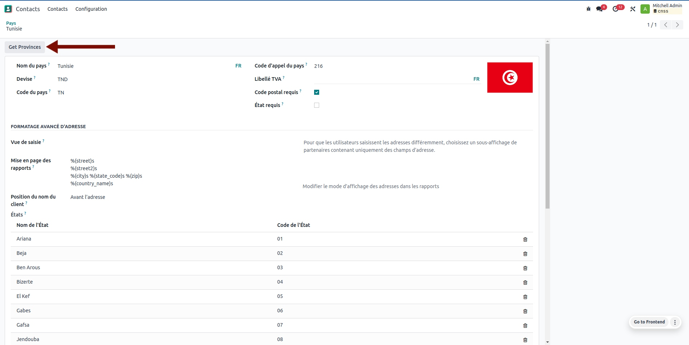

<section class="oe_container">
    <div class="oe_row oe_spaced">
        <div class="oe_span12">
            <h2 class="oe_slogan">Get the complete list of provinces for every country in the world.</h2>
            <h3 class="oe_slogan">based to CountryInfo https://github.com/porimol/countryinfo</h3>
        </div>
        <div class="oe_span6">
            <div style="width: 80%; margin-top: 3rem;">
                    
                </div>
        </div>
        <div class="oe_span6">
            <p class="oe_mt32">
               This Module will allow you to import the list of federal states of the country in a single click
            </p>
        </div>
    </div>
</section>
